인터넷정보관리사-2급 (2019-12-14 기출문제)
1과목: 인터넷의 이해
1. 다음에서 설명하는 인터넷 관련 문서는 무엇인가?
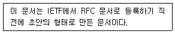
- FIY(For Your Information)
- IRG(Internet Resource Guide)
- I-DS(Internet-Drafts)
- IMR(Internet Monthly Report)
(정답률: 55%)

2. 다음 중 국제 인터넷 기구를 모두 선택한 것은?
- ICANN, IPC, IRG
- NIS, CERT
- ICANN, IPC, CERT
- ICANN, IPC, NIS
(정답률: 49%)
3. 다음 중 인터넷의 특징에 대한 설명으로 잘못된 것은?
- 상업적 용도로 많이 사용되고 있다.
- 기업이나 국가 전산망에서는 이용하지 않는다.
- URL 디렉터리 구분 기호는 슬래시(/)를 사용한다.
- 개방형 네트워크 구조이다.
(정답률: 78%)
4. 다음 중 인터넷에 대한 설명으로 잘못된 것은?
- TCP/IP를 표준 프로토콜로 사용한다.
- WWW는 간단하게 Web 서비스라고 한다.
- 운영체제의 사용에는 제한이 있다.
- 클라이언트 서버 시스템을 기반으로 이루어져 있다.
(정답률: 73%)
5. 다음 중 인터넷 주소에 관한 설명으로 잘못된 것은?
- IPv4와 IPv6의 주소 체계가 선택적으로 사용되고 있다.
- IPv4의 주소 체계는 A, B, C, D, E의 5개 클래스로 나누어 있다.
- 기본 구조는 네트워크ID와 호스트ID로 구분된다.
- IPv6의 헤더는 IPv4보다 필드 항목을 늘려서 많은 항목을 관리한다.
(정답률: 37%)
6. 다음 중 도메인 네임으로 잘못 만들어진 것은?
- Www.kait.co.kr
- WEB2.kait.or.kr
- WEB.KAIT2.COM
- K_WEB.KAIT.OR.KR
(정답률: 69%)
7. 다음 중 TCP/IP 프로토콜의 인터넷 계층 프로토콜이 아닌 것은?
- ARP
- IMAP
- RARP
- ICMP
(정답률: 52%)
8. 다음 중 Well-Known 포트 번호를 설명한 것은 무엇인가?
- 웹상에서 HTTP, FTP, Telnet 서비스 등을 제공하는 각 서버에 있는 파일들의 위치를 명시한 것이다.
- 비인가된 사용자의 위협으로부터 정보 자원을 보호하는 것을 말한다.
- 송신자나 수신자가 전송 메시지를 부인하지 못하도록 막는 것을 말한다.
- TCP와 UDP의 응용 프로세서를 식별하기위해 정해놓은 16비트의 숫자를 말한다.
(정답률: 36%)
9. 다음의 전자상거래 유형 중 정부와 기업 간 거래를 의미하는 유형은?
- B to B
- G to B
- G to C
- B to C
(정답률: 70%)
10. 소셜 미디어의 형태 중 다음의 특징을 가지고 있는 것은 무엇인가?
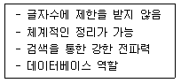
- 소셜 네트워크
- 인스턴트 메시지 보드
- 블로그
- UCC
(정답률: 66%)
11. 소셜 미디어의 장점에 대한 설명으로 잘못된 것은?
- 사진이나 동영상을 업로드 할 수 있다.
- 게시글의 전파 속도가 빠르다.
- 소셜 미디어를 활용하면 광고비가 더 소요된다.
- 콘텐츠의 공유가 가능하다.
(정답률: 82%)
12. 다음 중 소셜 미디어의 개념으로 가장 거리가 먼 것은?
- 사회적 관계 개념을 인터넷 공간으로 확대한 것이다.
- 공공정보를 적극 개방·공유하고 국민 맞춤형 서비스를 제공한다.
- 자신의 생각과 의견, 경험 등을 공유하기 위해 사용하는 쌍방향 온라인 도구와 플랫폼이다.
- 사람과 사람의 관계를 지향하는 서비스를 말하며 블로그, SNS, UCC 등이 있다.
(정답률: 72%)
13. 인터넷 비즈니스 성장과 함께 생겨난 용어로 기업 및 개인에게 전산 장비 등을 임대하거나 콘텐츠를 위탁 관리해 주는 곳을 뜻하는 것은?
- IDC
- ISP
- eBIZ
- DRM
(정답률: 36%)
14. 다음 클라우드 컴퓨팅 서비스 중에서 그 유형이 다른 것은?
- 네이버 클라우드
- 드롭박스
- 구글 드라이브
- 페이스북 F8
(정답률: 68%)
15. 다음 중 클라우드 컴퓨팅의 단점에 대한 설명으로 잘못된 것은?
- 서버가 공격당해도 개인 정보가 유출되지 않는다.
- 재해로 인해 서버의 데이터가 손상될 수 있다.
- 사용자가 원하는 앱을 설치하는 데 제약이 있다.
- 통신 환경이 나쁘면 서비스가 어려울 수 있다.
(정답률: 68%)
16. Android에 대한 설명으로 잘못된 것은?
- 오픈 소스 소프트웨어이다.
- 리눅스 중심의 폐쇄형 운영체제이다.
- 자바 언어로 앱을 작성할 수 있게 하였다.
- 모바일 기기들을 위해 만들어졌다.
(정답률: 68%)
17. 다음 중 클라우드 환경에서 스토리지 서비스 중 웹 오피스 기능과 통합된 서비스 유형이 아닌 것은?
- MS Sky Drive
- Google Drive
- DropBox
- Naver N Drive
(정답률: 57%)
18. 다음은 개인정보보호법에 대한 설명이다. 해당하는 조항은 무엇인가?
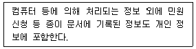
- 보호 범위의 확대
- 보호 의무 적용 대상의 확대
- 고유 식별 정보 처리 제한
- 개인 정보 수집 및 이용 제공 기준
(정답률: 47%)
19. 다음에서 설명하는 저작권의 기술적 보호 방법은 무엇인가?
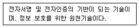
- 접근 제어
- DRM
- 암호화 기술
- 디지털 워터마킹
(정답률: 46%)
20. 다음 중 저작권법에서 보호받는 저작물로 가장 거리가 먼 것은?
- 건축물, 건축을 위한 모형 및 설계도서
- 지도, 약도, 도표, 모형
- 연극 및 무용, 무언극
- 헌법ㆍ법령ㆍ조약ㆍ명령ㆍ조례 및 규칙
(정답률: 66%)
21. 다음 중 개인 정보의 유형이 동일한 항목으로 구성된 것이 아닌 것은?
- 군번, 주특기, 근무 부대
- 전과 기록, 파산 기록, 이혼 기록
- 전자우편, 로그 파일, 쿠키
- 흡연, 음주, 보험 가입 현황
(정답률: 57%)
22. 저작권법에서 저작물을 창작한 자를 무엇이라 하는가?
- 실연자
- 제작자
- 저작자
- 사업자
(정답률: 71%)
23. 다음은 전자서명법의 벌칙 조항에 대한 설명으로 괄호 안에 공통적으로 적합한 것은?
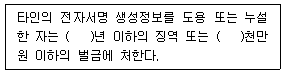
- 1
- 2
- 3
- 4
(정답률: 75%)
24. 다음 중 컴퓨터 시스템에 대한 설명으로 잘못된 것은?
- 중앙처리장치는 연산장치, 제어장치로 구성된다.
- 연산장치에서는 사칙연산과 논리연산을 수행한다.
- 제어장치는 명령어의 실행 순서를 제어하는 역할을 수행한다.
- 주기억장치에 있는 레지스터는 명령어를 저장한다.
(정답률: 49%)
25. 소프트웨어의 분류 중 응용 소프트웨어에 해당하지 않는 것은?
- iOS
- Excel
- HWP
- PowerPoint
(정답률: 72%)
26. 다음 중 운영체제가 아닌 것은?
- Unix
- Linus
- Shell
- Android
(정답률: 59%)
27. 다음 중 프로그램 사용료를 지불하지 않고 자유롭게 사용ㆍ복제하는 소프트웨어는?
- 쉐어웨어
- 프리웨어
- 상용소프트웨어
- 그룹웨어
(정답률: 65%)
28. 다음에서 설명하는 네트워크에 적합한 토폴로지는 무엇인가?
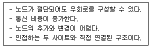
- 트리형
- 링형
- 버스형
- 성형
(정답률: 48%)
29. 다음에서 설명하는 서버 에러 코드는 무엇인가?
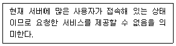
- 404 Not Found
- 500 Internal Server Error
- 503 Service Unavailable
- 403 Forbidden
(정답률: 56%)
30. 다음 중 웹에서 사용하는 스크립트 언어가 아닌 것은?
- PHP
- C
- JSP
- JavaScript
(정답률: 44%)
31. 다음 중 일반적인 멀티미디어 개발 과정 순서가 올바르게 나열된 것은?
- 디자인 → 콘텐츠 생성 → 도구 선택 → 멀티미디어 저작 → 테스팅
- 도구 선택 → 콘텐츠 생성 → 디자인 → 멀티미디어 저작 → 테스팅
- 디자인 → 도구 선택 → 콘텐츠 생성 → 멀티미디어 저작 → 테스팅
- 도구 선택 → 디자인 → 멀티미디어 저작 → 콘텐츠 생성 → 테스팅
(정답률: 54%)
32. 다음 중 멀티미디어의 특징에 해당하는 것으로 잘못된 것은?
- 통합성
- 선형성
- 양방향성
- 디지털성
(정답률: 57%)
33. 다음 중 국가, 대륙 간 넓은 지역을 연결하는 정보통신망은?
- LAN
- MAN
- VAN
- WAN
(정답률: 68%)
2과목: 인터넷 자원 탐색
34. 웹 페이지 제작 언어 중 서버측 언어에 해당하는 것은?
- SGML
- VRML
- CSS
- JSP
(정답률: 43%)
35. 문서 중간 중간에 특정 키워드를 두고 문자나 이미지, 동영상 등을 유기적으로 결합해 만든 문서는?
- 하이퍼링크
- 하이퍼미디어
- 미디어텍스트
- 하이퍼텍스트
(정답률: 30%)
36. 웹 브라우저에 대한 설명으로 잘못된 것은?
- HTML 프로토콜을 사용한다.
- 웹 클라이언트 프로그램이다.
- 멀티미디어 검색 프로그램이다.
- 입력 내용에 대한 자동 완성 기능을 제공한다.
(정답률: 34%)
37. 웹 브라우저 중 성격이 다른 하나는?
- Lynx
- Samba
- Cello
- Questel
(정답률: 35%)
38. 다음은 어떤 웹 브라우저를 설명한 것이다. (가)와 (나)에 들어갈 웹 브라우저를 바르게 나열한 것은?
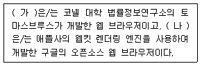
- (가) Chrome, (나) Cello
- (가) Safari, (나) Chrome
- (가) Cello, (나) Chrome
- (가) Cello, (나) Safari
(정답률: 38%)
39. 크롬에서 시크릿 모드로 실행했을 때 저장할 수 있는 내용은?
- 북마크
- 방문 기록
- 쿠키 데이터
- 양식에 입력한 정보
(정답률: 57%)
40. 파이어폭스에서 ‘KAIT 정보통신기술자격검정’사이트를 선택하여 바로 열리도록 하는 탭 기능은?
- 방문 탭
- 저장 탭
- 고정 탭
- 웹 사이트 탭
(정답률: 47%)
41. 사진이나 동영상을 표현할 수 없는 웹 브라우저는?
- 첼로
- 모자익
- 파이어폭스
- 링크스
(정답률: 38%)
42. 파이어폭스에서 검색과 관련된 단축키에 대한 설명으로 잘못된 것은?
- 검색 : Ctrl+F
- 이전 검색 : Ctrl+G
- 빠르게 검색 : /
- 빠르게 링크만 검색 : ’
(정답률: 40%)
43. 다음 중 웹브라우저가 제공하는 기능이 아닌 것은?
- 자주 가는 사이트 주소 저장
- 이전에 방문한 기록 저장
- 입력 내용에 대한 자동 완성
- 피싱사이트 자동 탐지
(정답률: 67%)
44. 크롬의 환경설정에서 자동 완성 기능을 사용 할 수 없는 내용은?
- 주소
- 북마크
- 비밀번호
- 결제 수단
(정답률: 31%)
45. 인터넷 익스플로러 11에서 그림과 같은 내용을 설정할 수 있는 인터넷 옵션의 탭은?
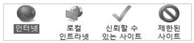
- 내용
- 연결
- 보안
- 개인 정보
(정답률: 60%)
46. 해당 웹 페이지가 다른 외부의 웹 페이지에 얼마나 많이 연결되어 있는가를 분석하는 우선 순위를 무엇이라 하는가?
- 빈도 우선순위
- 위치 우선순위
- 링크 우선순위
- 키워드 우선순위
(정답률: 52%)
47. 동일한 검색어로 검색 시 검색엔진에 따라 다른 결과가 나오는 이유로 가장 적절한 것은?
- 검색엔진의 검색 속도가 다르기 때문이다.
- 검색엔진의 색인기의 속도가 다르기 때문이다.
- 검색엔진의 데이터베이스 양이 다르기 때문이다.
- 검색엔진의 검색 전략이 모두 동일하기 때문이다.
(정답률: 73%)
48. 검색엔진을 통해 검색할 수 있는 분야가 아닌 것은?
- 카페에 게시된 내용
- 국내 일간지의 뉴스 기사
- 인터넷 사용자의 이메일 내용
- 유즈넷 뉴스그룹에 등록된 내용
(정답률: 70%)
49. 다음은 robots.txt 파일 내용의 일부를 나타낸 것이다. 이 내용이 의미하는 내용은?
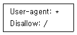
- 홈페이지 전체 내용을 모든 검색엔진의 접근을 허용한다.
- 홈페이지 전체 내용을 모든 검색엔진의 접근을 허용하지 않는다.
- 홈페이지 전체 내용을 특정 검색엔진만의 접근을 허용한다.
- 홈페이지 전체 내용을 특정 검색엔진만의 접근을 허용하지 않는다.
(정답률: 56%)
50. 에이전트 인덱스 방식의 특징에 대한 설명으로 잘못된 것은?
- 정보의 질이 높다.
- 정보의 양이 많다.
- 정보의 최신성이 낮다.
- 데이터베이스의 양이 많다.
(정답률: 33%)
51. 다음 중 검색엔진의 성격이 나머지 셋과 다른 것은?
- 로봇 검색엔진
- 단어별 검색엔진
- 키워드 검색엔진
- 지능형 검색엔진
(정답률: 39%)
52. 검색의 완전성을 측정하는 척도로 검색의 누락 정도를 나타내는 것은?
- 누락률
- 잡음률
- 정확률
- 재현율
(정답률: 37%)
53. 정보 검색에서 정도율을 높이는 검색 방법이 아닌 것은?
- 인접 검색
- 제한 검색
- 전방일치 검색
- 용어절단 검색
(정답률: 25%)
54. 네이버에서 제공하는 서비스로 음성과 이미지 인식, 인공신경망 번역, 대화형 엔진 등 인간의 오감을 활용한 기술들이 집결된 통합 AI 플랫폼에 해당되는 것은?
- WHALE
- Clova
- Papago
- V LIVE
(정답률: 42%)
55. 검색엔진과 서비스의 연결이 잘못된 것은?
- 구글 : 라인
- 네이버 : 밴드
- 네이트 : 싸이월드
- 다음 : 카카오톡
(정답률: 63%)
56. 다음 중 국내에서 개발한 검색엔진은?
- 줌(ZUM)
- 빙(Bing)
- 야후(Yahoo)
- 서치닷컴(Search.com)
(정답률: 60%)
57. 카카오(Kakao)에서 제공하는 서비스가 아닌 것은?
- 브런치
- 이글루스
- 팟플레이어
- 배틀그라운드
(정답률: 56%)
58. 이용자의 요구를 파악하여 문제 해결에 적절한 해결 방법을 제시하여 정보 전략을 보조하는 정보관리사의 역할은?
- 정보 중개인
- 정보 전문가
- 정보 분석가
- 정보 컨설턴트
(정답률: 59%)
59. 다음에서 설명하는 정보검색 관련 용어는?
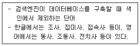
- 리키즈
- 개비지
- 불용어
- 시소러스
(정답률: 47%)
60. 다음의 검색 연산자의 유형은?
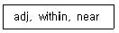
- 산술 연산자
- 논리 연산자
- 구문 연산자
- 인접 연산자
(정답률: 46%)
61. 정부기관이나 지방자치단체 등의 홈페이지로 공신력 있는 정보를 제공하는 사이트는?
- 허브 사이트
- 포털 사이트
- 공식 사이트
- 버추얼 사이트
(정답률: 61%)
62. 정보검색 시 연산자를 사용하여 검색식을 구성하지 않고 사용자가 일상생활에서 사용하는 문장 형태로 검색어를 입력하는 검색 방법은?
- 절단 검색
- 구문 검색
- 자연어 검색
- 결과내 재검색
(정답률: 52%)
63. 학술 정보를 제공하는 국내 데이터베이스가 아닌 것은?
- SCOPUS
- RISS
- NDSL
- DBpia
(정답률: 37%)
64. 다음은 정보를 정의한 내용이다. 이와 관련있는 학문 관점은?
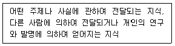
- 전통적 관점
- 사전적 관점
- 정보이론적 관점
- 행동과학적 관점
(정답률: 27%)
65. 정보원으로 데이터베이스를 선정할 때 필요한 평가 요소가 아닌 것은?
- 다양성
- 최신성
- 정확성
- 권위와 신뢰성
(정답률: 28%)
66. 다음 중 검색에서 사용되는 와일드카드 문자로만 짝 지어진 것은?
- *, &
- ?, *
- %, ?
- &, %
(정답률: 43%)
3과목: 인터넷 윤리
67. 다음 인터넷 역기능 중 인격 침해 유형에 해당하는 것은?
- 음란물 유포
- 저작권 침해
- 인터넷 절도
- 인터넷 스토킹
(정답률: 46%)
68. 다음에서 설명하는 리차드 루빈이 제시한 정보 통신기술의 유혹 요인에 해당되는 것은?
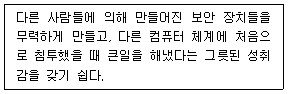
- 파괴력
- 심미적 매료
- 국제적 범위
- 최소 투자에 대한 최대 효과
(정답률: 44%)
69. 다음 중 향후 정보 통신 기술의 발전이 수반하게 될 제반 윤리적 문제들에 대해 사전에 숙고하도록 도와주는 인터넷 윤리의 기능은?
- 예방 윤리
- 처방 윤리
- 책임 윤리
- 종합 윤리
(정답률: 53%)
70. 다음 중 전자우편 사용 시 지켜야 할 네티켓과 가장 거리가 먼 것은?
- 용량이 큰 파일은 반드시 압축하여 첨부시킨다.
- 광고성 전자우편을 보낼 때에는 제목에 ‘광고’라는 문구를 명시한다.
- 전자우편은 필요시에만 열어보며 모든 자료들은 서버에 잘 보관해 둔다.
- 전자우편 발송전에는 반드시 주소가 맞는지 확인하고 발송한다.
(정답률: 60%)
71. 다음 괄호 안에 들어갈 내용으로 가장 알맞은 것은?
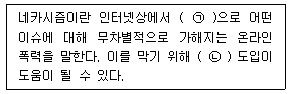
- ㉠-익명, ㉡-IP 실명제
- ㉠-익명, ㉡-인터넷 실명제
- ㉠-가명, ㉡-IP 실명제
- ㉠-가명, ㉡-인터넷 실명제
(정답률: 62%)
72. 다음 괄호 안에 들어갈 가장 적절한 내용을 순서대로 나열한 것은?
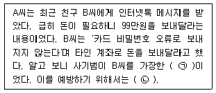
- ㉠-메신저 비싱, ㉡-에스크로 제도를 적극 활용한다.
- ㉠-메신저 비싱, ㉡-B씨 본인이 맞는지 확인한다.
- ㉠-메신저 피싱, ㉡-에스크로 제도를 적극 활용한다.
- ㉠-메신저 피싱, ㉡-B씨 본인이 맞는지 확인한다.
(정답률: 51%)
73. 다음 <보기>에서 사이버 폭력의 특징에 해당 하는 것만을 모두 고른 것은?
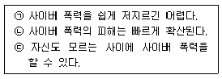
- ㉠
- ㉡, ㉢
- ㉠, ㉢
- ㉠, ㉡, ㉢
(정답률: 58%)
74. 다음 중 전자상거래 사기 예방 방법으로 가장 거리가 먼 것은?
- 부득이하더라도 직거래는 가급적 피한다.
- 결제 대금 예치 제도에 가입되어 있는 사이트를 이용한다.
- 대형 오픈마켓이라도 개별 입주자까지는 신뢰하지 않는다.
- 해당 판매자를 대상으로 하는 피해자 카페가 있는지 확인한다.
(정답률: 59%)
75. 다음 인터넷 중독 과정 중 현실 탈출 단계에서 나타나는 증상으로 가장 거리가 먼 것은?
- 사회적 사건의 주인공이 된다.
- 오직 접속 상태만을 갈구하게 된다.
- 익명성은 음란성과 결합되어 더욱 발휘된다.
- 가상 세계의 환상에 사로잡혀 현실 인식에 장애가 생긴다.
(정답률: 39%)
76. 다음 중 인터넷 중독의 원인 중 사이버 공간에서의 특징으로 가장 거리가 먼 것은?
- 현실 도피
- 재미와 호기심
- 높은 자아 존중감
- 새로운 자아의 구현
(정답률: 63%)
77. 인터넷 중독의 증상 중, 자극 차단 시 부작용으로 인해 이를 중단하지 못하는 상태를 뜻하는 것은?
- 강박적 사용
- 금단
- 내성
- 일탈 행동
(정답률: 58%)
78. 다음과 같은 인터넷 중독의 증상은?
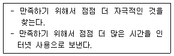
- 발모광
- 내성
- 집착
- 강박적 사용
(정답률: 48%)
79. 다음 중 인터넷 중독 중증 치료 시 치료 과정 중 제일 처음 하는 것은?
- 목표 설정
- 현상 파악
- 협조 의뢰
- 허비한 시간 검토
(정답률: 51%)
80. 다음 중 인터넷 중독을 예방하기 위한 방법으로 가장 거리가 먼 것은?
- 인터넷 사용 외에 운동이나 취미 활동을 즐긴다.
- 컴퓨터를 사용하기 전에 다른 할 일을 먼저한다.
- 컴퓨터 옆에 알람 시계를 두고 사용 시간을 확인한다.
- PC방에는 여럿이 가는 것 보다 혼자 가는 것이 좋다.
(정답률: 63%)